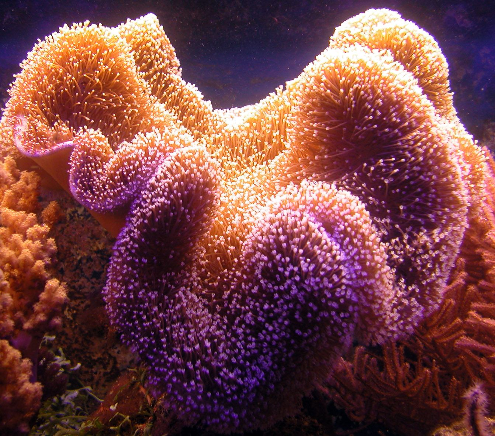

Colonias de zoas: rainbow raptor, sun flower, candy apple red, sunny de light.
Información, cuidados y curiosidades
Los Zoantidos (Zoanthus) es un género de corales de la familia Zoanthidae (clase Anthozoa); y son uno de los corales que más llama la atención, posiblemente por sus colores, por su amplia variedad, o por ser un coral de rápido crecimiento. Usualmente son corales muy resistentes, por eso en muchos casos resulta ser una buena opción para el acuarista principiante, pero a su vez, es tan extensa la variedad de colores, que hay algunos que son clasificados como “de colección“, y pueden ser una opción para aquellos acuaristas experimentados que gustan tener piezas de colección, raras, poco comunes. Los zoantidos pertenecen a la categoría de corales blandos. Los pólipos de zoantidos pueden ser solitarios, o bien, integrarse a
Parámetros recomendados
Salinidad: 1023 a 1025 Temperatura: 23 a 26º C pH: 8.3 dHK: 8-12
Alimentación
Basada en zooplancton y algas. Se alimentan usando sus pequeños pólipos, tomando de la corriente del agua aquellos compuestos orgánicos; aunque la mayoría de éstos corales son fotosintéticos. Es importante mencionar que muchas de estas especies requieren más intensidad lumínica que otros miembros de esta familia.
Temperamento
Pudieran clasificarse como agresivos para otros corales e invertebrados, por lo que se recomienda una distancia moderada entre ellos y sus vecinos, ya que al ser resistentes, pudieran tener esa ventaja sobre algunos otros corales.
Dificultad
Fácil. Es importante mencionar que, como todos los corales, requiere una aclimatación apropiada, pues pueden presentar complicaciones durante y después de éste proceso. Es un hecho que una vez que el nuevo coral logra estabilizarse en el tanque, será uno de los más resistentes, lucirá y podrá propagarse fácilmente. Requieren de una buena iluminación, y buena corriente de agua para su crecimiento. Mi recomendación sería colocarlo en la zona media del tanque, y conforme su comportamiento lo solicite, podrá moverse a donde el coral se sienta más cómodo.
Aditivos recomendados
Básicamente requiere elementos traza.
Precauciones
Producen sustancias tóxicas conocida como palytoxinas un potente neurotóxico, por lo que es muy recomendable que al manipularlos, se utilicen guantes.
Corales Blandos Sarcophyton es un género de corales de la familia Alcyoniidae, orden Alcyonacea.
Aspecto
Cuando los largos y delgados pólipos, o animales corales diminutos, se encuentran fuera, el coral tiene una apariencia casi espinosa; pero cuando se encuentran dentro, su apariencia es lisa como el cuero. Las colonias de coral blando pueden medir hasta 1m (3 pies) de ancho y viven tan juntas que parece como si se tratara de una sola colonia de cientos de pies. Las colonias individuales parecen hongos enormes.
Los pólipos y corales clasificados como blandos son el grupo de invertebrados sésiles más popular entre todos los aficionados a la acuariofilia marina. A lo largo de este breve artículo pretendemos acercarnos a su clasificación tipo con objeto de crear una breve guía de introducción tanto para el aficionado neófito como para el más experimentado.
Comenzaremos diciendo que los corales denominados blandos se agrupan en el filo de los Cnidarios dentro de la clase Antozoo y comprende una cifra superior a las 6.000 especies descritas. Los animales agrupados dentro de esta clase se diferencian del resto de ejemplares por carecer dentro de su ciclo vital de la fase medusa.
Otro factor determinante en la aproximación a su identificación es la presencia dentro de la estructura de sus pólipos de células dinoflageladas conocidas como zooxantelas. Estas células en realidad son algas que en simbiosis con el invertebrado le proporcionan hasta el 98% de sus necesidades nutricionales a través de los procesos fotosintéticos.
Dentro de esta clasificación denominada Antozoo podemos diferenciar dos grandes grupos conocidos como Octocorales y Hexacorales. Esta distinción se realiza en base al número de pólipos que presente cada especie. Los Octocorales presentan siempre 8 tentáculos que pueden encontrarse ramificados. Los Hexacorales sin embargo presentan en todas las ocasiones un número de tentáculos múltiplo de 6
Los corales de pólipo corto son los encargados de la formación de los arrecifes.
Los corales duros SPS (Small Polyp Scleractinians = corales duros de pólipos pequeños) Necesitan generalmente una fuerte iluminación, una circulación fuerte del agua y una buena calidad de la misma. La luz aporta a las zooxantelas la energía que necesitan y éstas proveen de sustancias nutritivas al coral. La buena circulación del agua elimina los desechos, provee de oxígeno, de presas y elimina la acumulación de sustancias. Crecen en formas diferentes en función del medio en el que se encuentran. Pueden ser con formas de ramas, finas y largas si los corales se encuentran en aguas de corriente débil o gruesas en casos de corrientes rápidas o con forma de costra. La Seriatopora, Pocillopora, Acropora, Anacropora o Stylophora son tipos de corales duros SPS.
Los corales duros o pétreos de pólipo grande, son cnidarios que viven en el fondo del mar y construyen un esqueleto duro.
Corales duros LPS (Large Polyp Scleractinians = corales duros de pólipos grandes) Los corales LPS son menos exigentes que los SPS en lo que se refiere a la iluminación. En la naturaleza viven entre 15 y 30 metros de profundidad. Están provistos de largos tentáculos que afectan a los corales de alrededor. Por ello se recomienda fijarlos separados unos 15 cm los unos de los otros para evitar conflictos de territorio. Ejemplos de estos corales son: Echinophyllia, Echinopora, Euphyllia, Acanthastrea, Agaricia, Alveopora, Lithophyllon, Symphyllia, Trachyphyllia, Tubastrea, Galaxea, Gardineroseris, Goniastrea, Goniopora, Heliofungia, Herpolitha, etc…